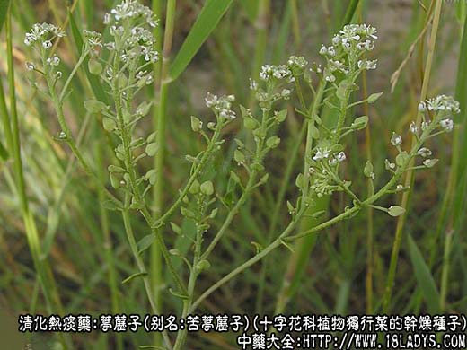
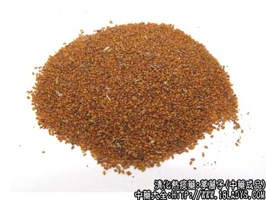
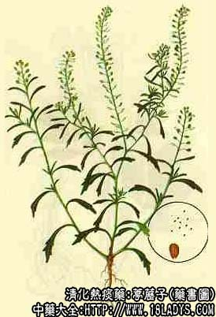

葶苈子为常用中药，《神农本草经》列为下品。商品主要有两大类。分北葶苈子（苦葶苈子）和华东葶历子（甜葶苈子）。北方多用苦葶苈子。华东中南多用甜葶苈子。
别名：葶苈。
来源：苦葶苈子为十字花科植物独行菜（北葶苈子）或北美独行菜的干燥种子。甜葶苈子为十字花科植物播娘蒿（南葶苈子）的干燥种子，均为野生。
植物形态：独行菜为一年生草本植物，茎直立，多分枝，生有极细小的头状腺毛。叶互生，基生叶狭长椭圆形，茎上部叶线形，无柄，基部有叶耳，叶缘有稀疏的缺刻或粗锯齿。总状花序顶生，花小，萼四片，花瓣呈退化状态，雄蕊2～4枚。短角果扁平近圆形，先端微凹。种子倒卵形，淡红棕色。
产地：苦葶苈子主产于华北、东北、西北地区，华东亦有分布
性状鉴别：1、苦葶苈子（北葶苈子）：呈扁平倒卵形。淡红棕色，长约1.5毫米，宽约0.75毫米，一端钝圆，另一端渐尖，顶部微凹。在扩大镜下观察，种子表面有两条纵向浅槽，凹处折色，气微味辣微苦，嚼之粘滑。
2、甜葶苈子（华东葶苈子）：呈扁平长圆形。黄棕色，微有光泽。长约1毫米，直径约0.5毫米，一端纯圆，另一端近截形，两边多不等长，中央凹入，在扩大镜下观察，表面具有细密的网状纹理及两条纵裂的浅槽。气微味甘淡，嚼之粘滑。
两处葶苈子均以红棕色，无皮壳杂质者为佳。
主要成分：种子含硫甙；和脂肪油。
功效与作用：1、利尿和强心，药理实验证实，葶苈子的有效成分具有强心甙作用的特点，能加强心肌收缩力。其利尿作用也可能与此有关，由于心肌收缩力加强，循环改善，肾区血流增加而尿。
2、祛痰，适宜于治热痰。
炮制：生用。
性味：辛苦，大寒。
归经：入肺、膀胱、大肠经。
功能：泻肺气、行水，消肿。
主治：痰壅咳嗽，水肿胀满。
临床应用：主要用于泻肺，即泻肺中水气。按中医理论，如果肺中水气壅塞，就会出现喘满肿胀。从现代医学观察看，属于肺内或胸膜腔内有大量分泌物或水液积存，影响心肺功能，出现呼吸迫促、喘息、甚至心力衰竭而造成水肿，引起上述病变的常见疾病如肺原性心脏病、胸积液等。葶苈子治疗这两种病甚为适宜。其泻肺作用即利尿消肿和祛痰平喘作用。常用方有葶苈子大枣泻肺汤，在此基础上、或加党参益气、桑白皮清肺利水、或加配麻黄、杏仁、都能加强消肿平喘的作用。
使用注意：葶苈子只适用于实证水肿和喘咳。如喘咳由肾虚所致，或水肿由脾虚所致，均不适用。
用量：5～10g。
处方举例：葶苈大枣泻肺汤加味：葶苈子10g、大枣5枚、桑白皮12g、党参10g，水煎服。
注：1、除上苦、甜两种葶苈子外，还有地方习用品。①黑龙江使用十字花科植物葶苈的种子，种子较小扁平椭圆形，长约0.65毫米，宽约0.37毫米，②四川使用十字花科植物芝麻菜的种子。种子较大，扁椭圆形，长约1.8毫米，宽约1～1.8毫米。这两种京津不销。
2、天津市以苦葶苈的干燥全草药用，名葶苈草。疗肠炎痢疾有显著，并制有中成药膏剂，名肠炎膏。